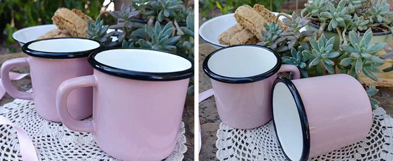

The blikbeker is probably the most recognisable cup in South Africa.

White enamel. Blue rim. The small dent on the side from years of camping, church bazaars and padkos. There was one in almost every kitchen.
Now there is a pink one too.
8cm tall — right for an espresso, a small dop, or a glass of bubbly when lunch runs long.
Cool enamel that holds its temperature. Made by Eersteklas, who have been making enamel cups in South Africa long enough that the blue-and-white version has become part of the country’s kitchens.
The same cup. Just a different colour.